Haboro
Haboro · Hokkaido
Haboro
Highlighted on the Hokkaido map.
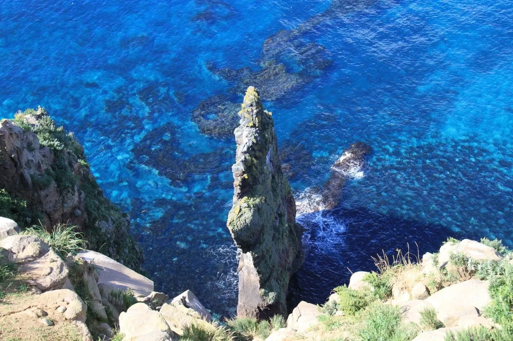
Stay
はぼろ温泉サンセットプラザ
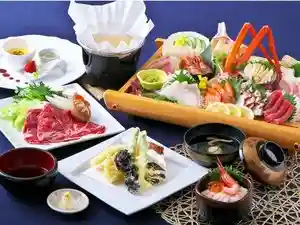
Haboro Onsen Sansettopuraza
Dining
ヤマサ食堂
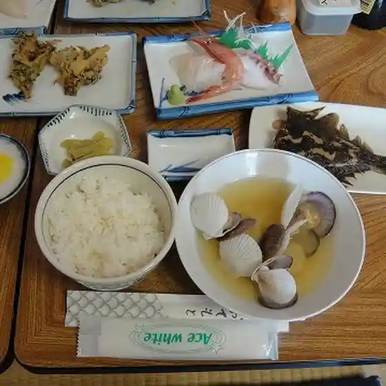
Yamasa Shokudou
セイコーマート 羽幌南町店

Seikoomaato Hahoro Minamimachi Mise
UOYA KISSUI
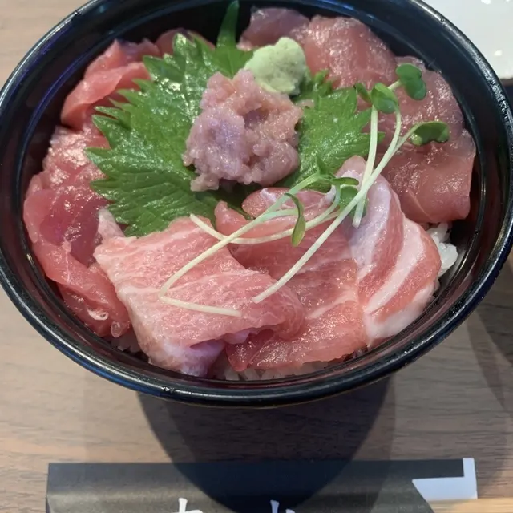
Uoya Kissui
オロロン荘
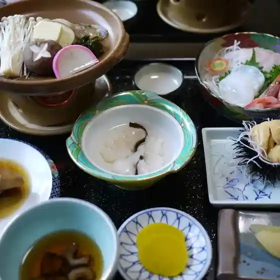
Ororon Sou
布目旅館
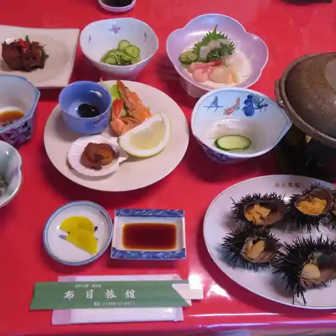
Nunome Ryokan
羽幌遊歩ユースホステル

Hahoro Yuuho Yuusuhosuteru
焼肉酒場 笑楽喜

Yakiniku Sakaba Warai Rakkii
cafe&bar B★UP
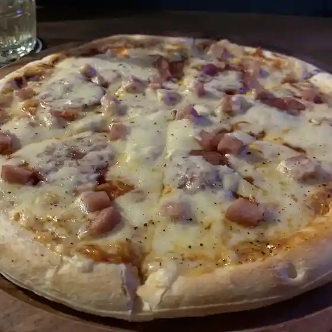
Cafe&Bar B ★ Up
久保田おやき店
Kubota Oyaki Mise
居酒屋 一海
Izakaya Kazumi
梅月
Baigetsu
道の駅 ほっと はぼろ
Michi No Eki Hotto Haboro
羽幌 鮨処 なか川
Hahoro Sushi Tokoro Naka Kawa
かん八
Kan Hachi
レストラン松尾
Resutoran Matsuo
北のこんぶ小屋
Kita Nokonbu Koya
民宿 栄丸
Minshuku Sakae Maru
イチゴ シロップ
Ichigo Shiroppu
旅館セールス会館
Ryokan Seerusu Kaikan
はぼろ温泉サンセットプラザ
Haboro Onsen Sansettopuraza
銘菓ささや
Meika Sasaya
甘えびファクトリー蝦名漁業部
Amaebi Fakutorii Ebina Gyogyou Bu
セイコーマート 羽幌北大通店
Seikoomaato Hahoro Hokudai Toori Mise
羽幌町離島会館
Hahoro Machi Ri Shima Kaikan
Sights
Akaiwa Lookout
Akaiwa Lookout
Yakishiri Men Hitsuji Ranch
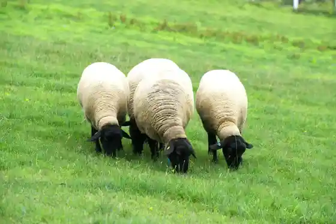
Yakishiri Men Hitsuji Ranch
Hokkaido Umidori Center
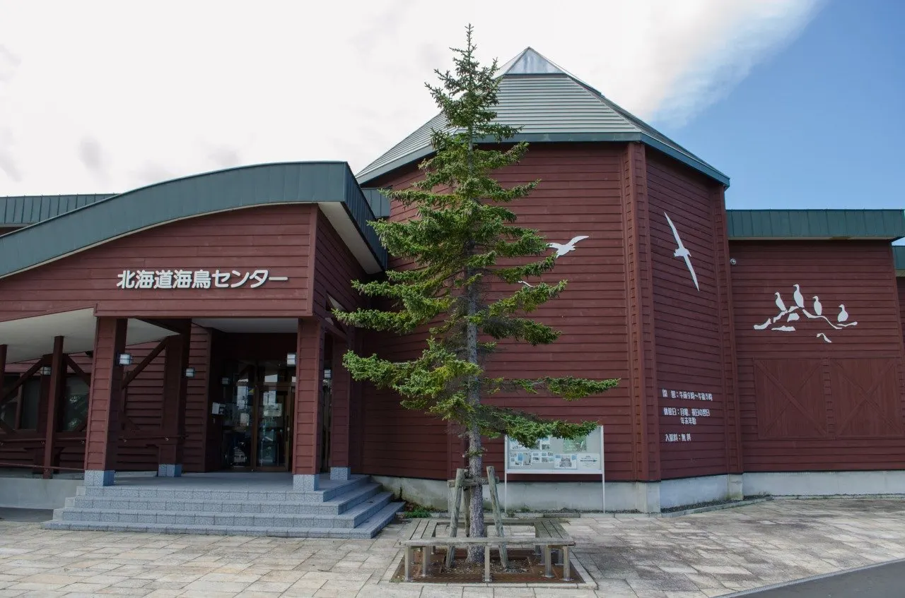
Hokkaido Umidori Center
Umidori Kansatsu Sha
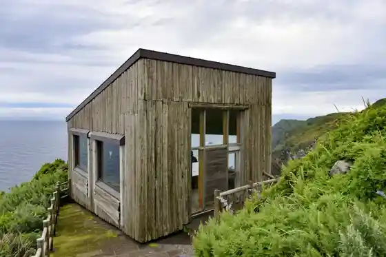
Umidori Kansatsu Sha
Uguisu Tani
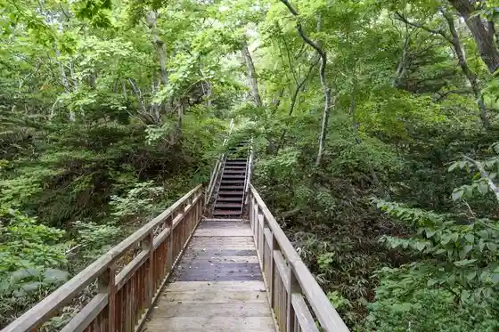
Uguisu Tani